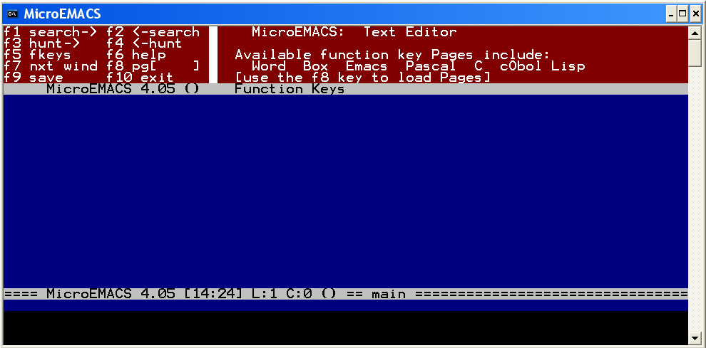
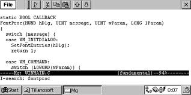

介绍一下MicroEmacs
看见vmlinz在玩JED（(轻量级Emacs--JED介绍 - vmlinz's Blog），于是也装了一个玩玩，但我对它的GUI版本很不满意。该文章里面又说到了其它的轻量级编辑器，里面有个叫做MicroEmacs的。想起以前看见网上说Linus用的就是这个叫做MicroEmacs的编辑器（据说他还说了GNU Emacs is just evil，但我没找到确切的出处，只在EmacsWiki上看到过[link]）。好，去找来玩玩。
但在Google上一搜，居然没有看到一个象MicroEmacs官网的网址，中文的说明也很少。在Wikipedia [link]和EmacsWiki [link]上看了一下介绍才明白，这个东西诞生在80年代，因为体积不大，互联网又没有出现，所以大家就拷来拷去，改出了好多个分支：
- 原始作者Daniel Lawrence 自己的版本（不过最早的作者是Dave Conroy），，最新版本是09年2月出的5.00，但提供了源代码和Windows版本，似乎用的人不多。网上其它地方可以找到3.12和4.0版本，这两个版本以前使用比较广泛；
- uEmacs/PK，作者是Petri H. Kutvonen，基于Lawrence原版的3.9e分支出来的。最后版本是4.0.15， 各个kernel.org镜像上均可以下载到源代码[uemacs]；
- Linus他们在kernel.org上维护的另一个分支（git仓库链接），基于uEmacs/PK，是在P.K.停止开发后，Linus接手的（这也是为什么kernel.org上有uemacs/pk的下载连接）；
- 最受欢迎、最有名（似乎功能也最强的）的一个版本是Jasspa，它在1987年就从原版MicroEmacs 3.8中分支出来，增强了特别多，下面将会详细介绍其特性；
- 我十年前读书的时候淘到一张C++ User Group的光盘，里面就提供了一个Windows 3.1 GUI的port，似乎改动也不小（要知道除了jasspa，其它版本大多只有终端版本）。刚才在网上搜了半天，找到说是Pierre Perret 基于Lawrence的MicroEmacs 4.0做的，不过其所在网址已经打不开了（已经排除了G.F.W的因素）；
- 还有其它一些分支和变体，比如快捷键跟GNU Emacs更接近的mg（原名MicroGNUEmacs。它甚至有个WinCE版本），克隆vi 的vile，ersatz emacs，Conroy MicroEmacs等等。前面说的JED跟MicroEmacs也有些渊源。。
为什么这么有名的东西，在Linux里面没有见到过呢？因为原始作者Daniel Lawrence是个激进的反GPL分子，多次明确表示不同意将这个东西变成自由软件（free software）——虽然它一直是开放源码（open source）的。一直到了2002年，Lawrence才松口。至于02年之后为什么还没进入各个distribution，我就搞不清楚了（估计是没有吸引力不够？）不过FreeBSD里面是收录了它的。
本来是打算主要介绍Jasspa的主要特性和亮点功能的，没想到前面这版本的考证工作费了我不少时间（而且各处的说法还有些相互矛盾的，比如），所以Jasspa下次再讲吧。
总体说一下MicroEmacs：。它的主要特性有：
- 按键的行为可配置
- 多窗口编辑
- “菜单”可配置
- 可通过宏语言来扩展
- 轻量级（加上配置都不到1M）
当然基本的多窗口编辑、shell集成、可通过宏进行扩展这些基本思想还是有的，你拿它来替代nano还是绰绰有余。——但Jasspa 就不一样了，它完全可以用“麻雀虽小、五脏俱全”来形容，可说是功能齐备、文档详尽、配置方便、扩展容易。这个下次再详细讲吧。

对了，还有一点忘了说了，这个MicroEmacs有个别名叫uemacs，因为μ跟micro是差不多的意思。有不少地方都是直接用uemacs这个名字。
参考:
- Wikipedia : MicroEMACS
- EmacsWiki: MicroEmacs
- texteditors.org: MicroEmacs
- MicroEmacs下载（主要是Lawrence原始分支，提供了多种平台的3.09 - 5.00各版本二进制包和源代码，也有mg的版本）


现在emacs 感觉也不是太大